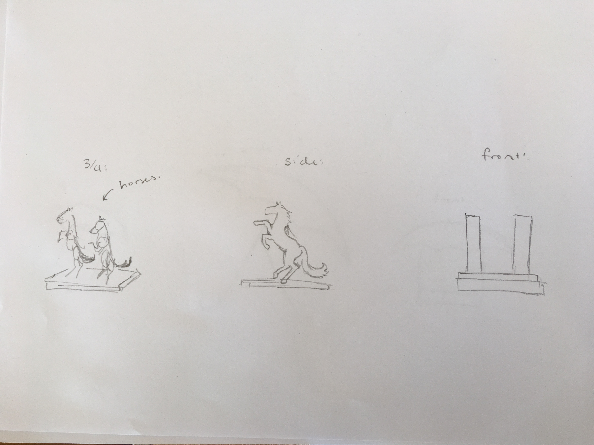
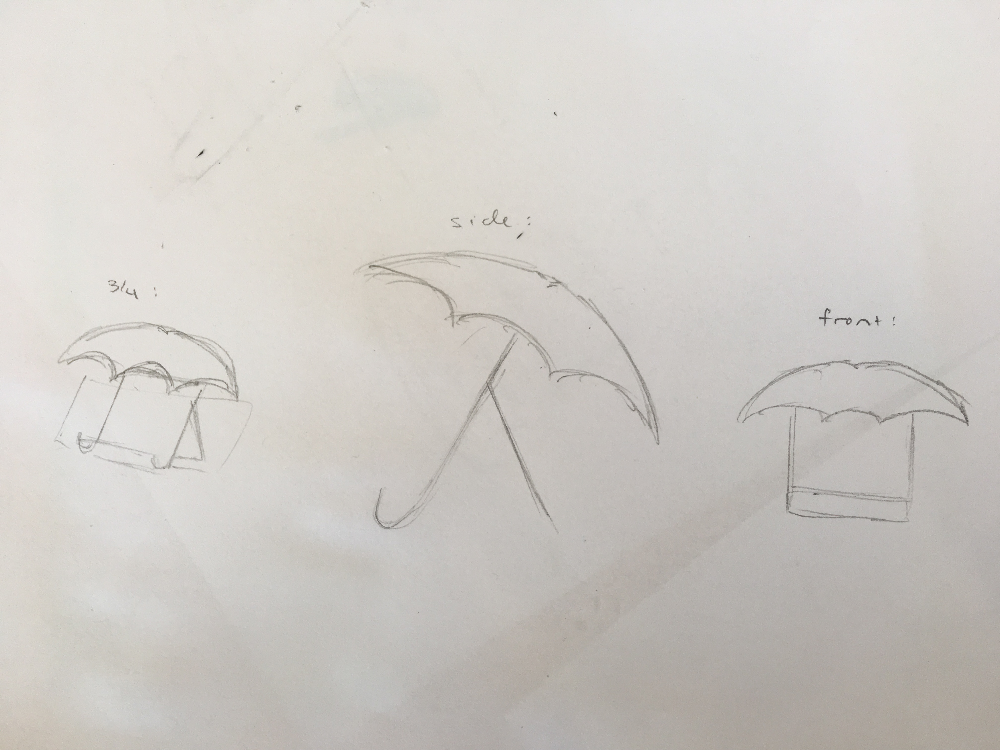
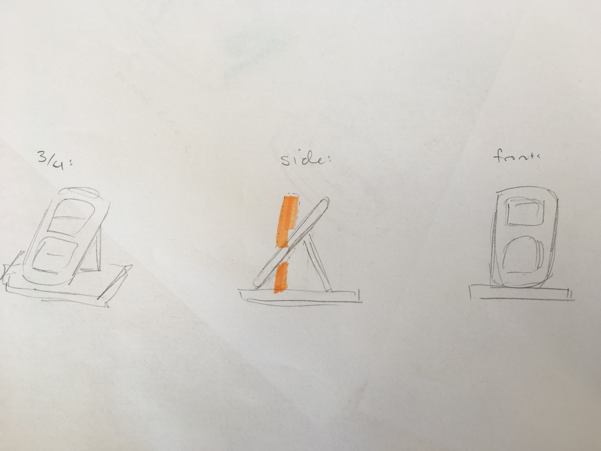
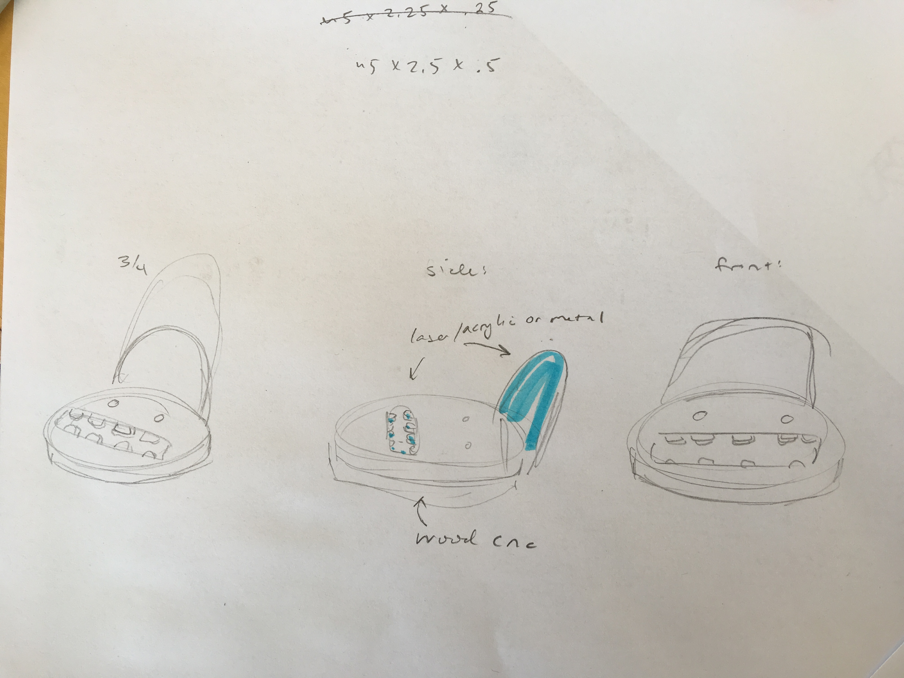
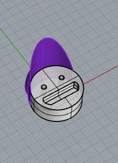
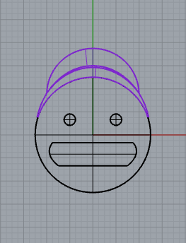
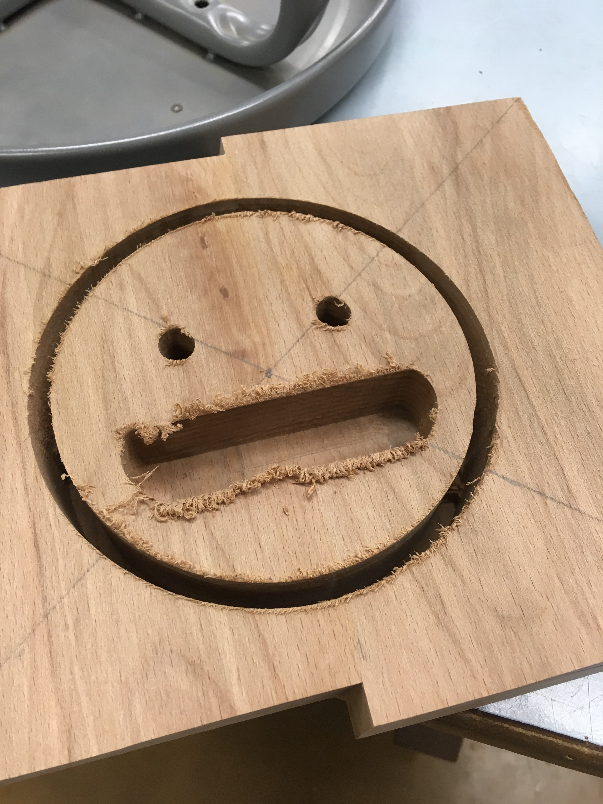

I took this class in the spring semester of my senior year at Lick-Wilmerding High School. I wanted to take this class because for most of my shop classes, I had used CNC machines for the majority of my project;
I'm super intereseted at joinery and turning because it'll give me the oppurtunity to feel the materials I'm working with in way that I can't when I just use CNC machines. In the class, we use lathes,
band saws, table saws, edge sanders, plannar, CNC router, laser cutters, 3d printers, plasma cutter, and other tools.
To refamiliarize ourselves with the shop tools, our first project was a collaborative project
where we had to create a phone holder. We then spent the rest of the semester preparing for ourtwo individual projects, one of which asks them to apply major wood joinery techniques (finger, dove, butt and miter joints).
The second focuses on wood turning.

With a partner, we were assigned a project to make a phone holder than fit within a 8x8x8 box, was less than one pound, is functional, and uses at least 2 CNC machines and 2 materials.
We began the project by brainstorming ideas. After choosing an idea, we began building. Using the 3d printer, we created a hat. Using the CNC, we cut out the wood base. Lastly, we used the laser cutter
to cut out teeth. We then glued them all together.
initial designs
 |
 |
 |
|---|
|  |  |  |  |
|---|
final design
|  |  |
|---|
Logs:
1/30/19
Today, we chose and sanded a piece of 2-inch thick wood. We also finished doing the rhino for the teeth and hat. we laser cutted the tooth prototypes and hat prototype. At the same time, we worked on the rhino file for the head/base component and the hat. We’ll hopefully start cncing next class.

2/1/19
I created a copy of Kyler’s head file. I also had to cut and join a piece of wood since we didn’t want to waste too much. While waiting for the glue to dry, I finished designing and started 3d printing the hat component. I also cnc-ed the wood component after it dried. Because the drill bit was not long enough, we have to manually cut and sand the remaining piece.
2/6/19
During tutorial, we cut out the head with a bandsaw and sanded away the remaining bits. The 3d print for the hat was successful. On the other hand, we miscalculated the depth of the mouth; as a result, when we put the phone in, it doesn’t touch the hat. As a result, we decided to use the teeth as a platform for the phone to rest on. To make sure that it would be stable enough, we had to cut out thin pieces of wood to support the teeth. After laser-cutting the teeth, we spent the remainder of the class cutting the wood and super gluing the teeth and wood to the base piece. Because we finished early, we started to plan for additions we could add during next class- ears that would function as pencil holders.

2/8/19
Before the class, we realized that there was a requirement that our phone holder had to weight less than 1 pound. After checking and finding that it weighed 1.4 pounds, we decided to cut off the bottom of the piece. Unfortunately, the bandsaw broke during the process. As a result, we had to add in wood filler and cut the remaining wood with a hand saw. During that time, we were also able to cut and sand the ears. We finished the class by gluing on the hat and ears. We filled in the cracks between the ears and head with some wood filler. We’ll have to come in before next class to sand away some filler and cover the rest in beeswax.